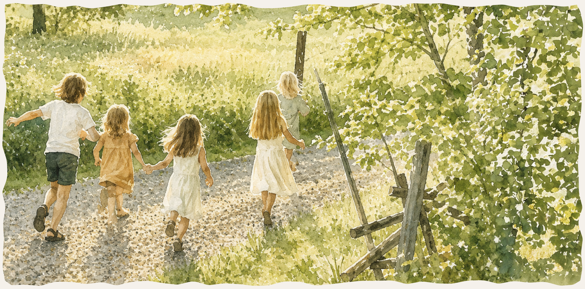
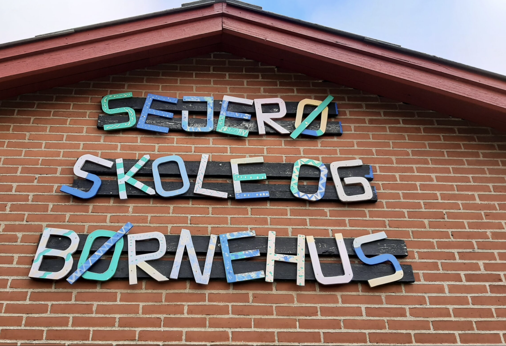
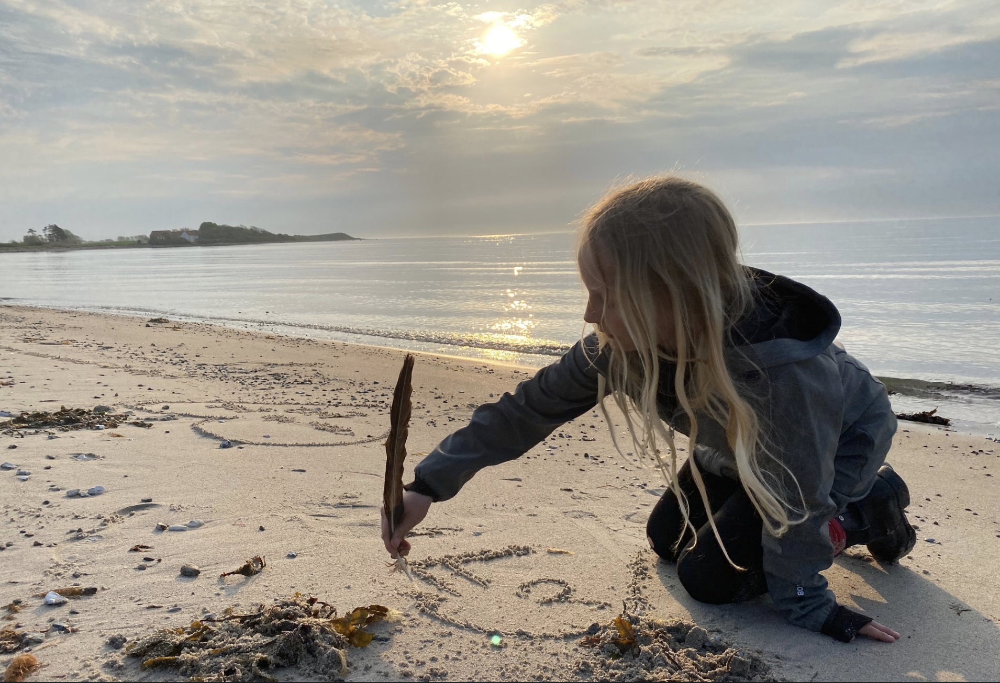
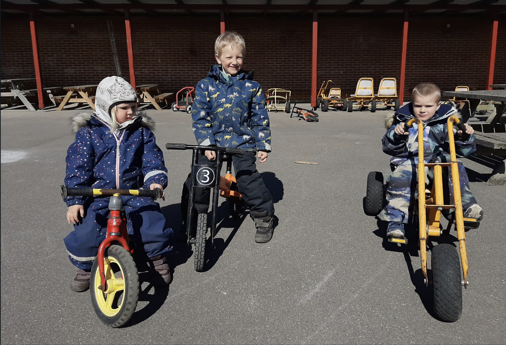

På Sejerø vokser børn op tæt på naturen, fællesskabet og de små oplevelser i hverdagen. Her er der plads til leg på stranden, cykelture gennem landskabet og trygge rammer, hvor alle kender hinanden. Øens rolige tempo giver mere tid til nærvær, eventyr og et børneliv fyldt med frisk luft og frihed.

På Sejerø møder børn en tryg og nærværende skolehverdag med små klasser og tæt kontakt mellem elever, lærere og familier. Her er fællesskab, trivsel og plads til det enkelte barn i fokus – med naturen som en naturlig del af hverdagen.

På Sejerø er naturen en stor legeplads fyldt med mulige eventyrer. Her kan børn udforske stranden, bygge huler, finde krabber, cykle på små stier og opleve årstidernes skiften helt tæt på. Øens rolige omgivelser giver frihed til leg, nysgerrighed og udeliv.

Selvom Sejerø er lille, er der masser af muligheder for fællesskab og aktiviteter for både børn og voksne. Her kan man blandt andet gå til sport, kreative aktiviteter og lokale arrangementer, hvor øens fællesskab og nærvær er i centrum.
På Sejerø møder børn en tryg og nærværende skolehverdag med små klasser og tæt kontakt mellem elever, lærere og familier. Her er fællesskab, trivsel og plads til det enkelte barn i fokus – med naturen som en naturlig del af hverdagen.
På Sejerø er naturen en stor legeplads fyldt med mulige eventyrer. Her kan børn udforske stranden, bygge huler, finde krabber, cykle på små stier og opleve årstidernes skiften helt tæt på. Øens rolige omgivelser giver frihed til leg, nysgerrighed og udeliv.
Selvom Sejerø er lille, er der masser af muligheder for fællesskab og aktiviteter for både børn og voksne. Her kan man blandt andet gå til sport, kreative aktiviteter og lokale arrangementer, hvor øens fællesskab og nærvær er i centrum.